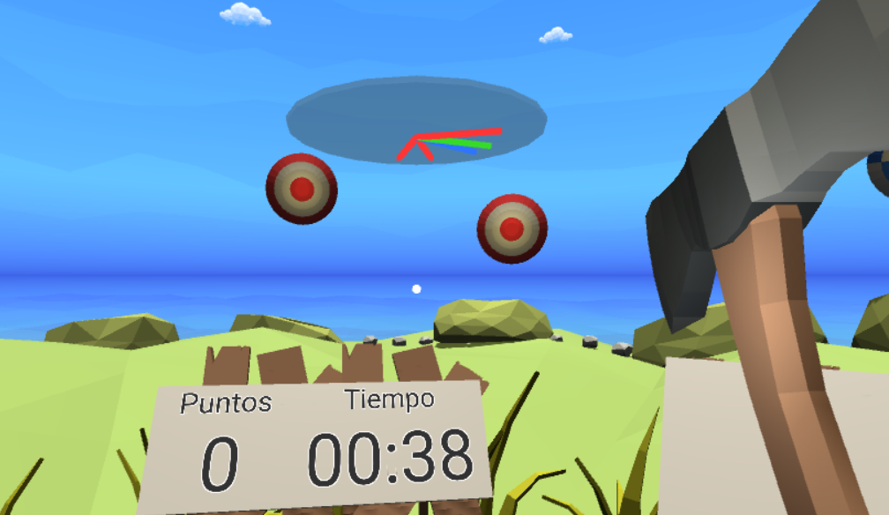
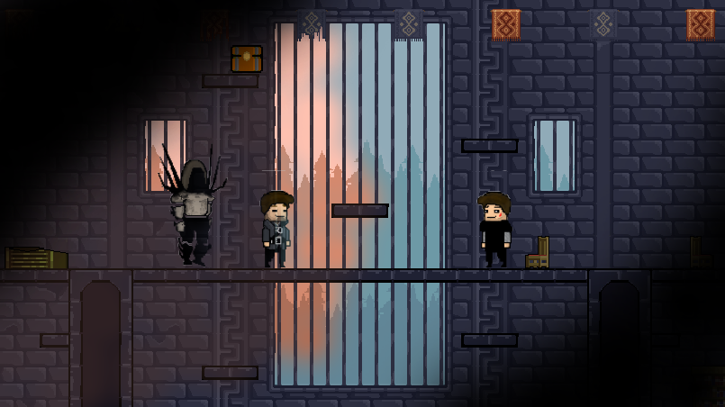

Videojuego realizado como Trabajo de Fin de Grado, titulado " Posibilidades de la Realidad Virtual para mejorar la accesibilidad en desarrollos realizados con Unity". Este trabajo ha sido desarrollado íntegramente por mí. Desarrollado en Unity, consiste en un videojuego de realidad virtual móvil (plataforma Cardboard mediante el SDK GoogleVR) al cual se le han aplicado principios de accesibilidad en videojuegos. La calificación del proyecto es de Sobresaliente - 10.
Es un juego de disparos en el que los objetivos (dianas) aparecen alrededor del jugador y éste debe lanzar hachas hacia las dianas para ganar puntos antes de que se termine el tiempo de la ronda. Las rondas tienen un tiempo máximo, que puede ser extendido. Posee un sistema de dificultad incremental, lo que significa que cuanto más tiempo pasa el jugador en una ronda, más difícil es: aumenta la frecuencia de aparición de objetivos y su velocidad.
El objetivo principal del juego es conseguir la puntuación máxima posible. Hay diferentes tipos de dianas con efectos distintos, y se pueden obtener bonificaciones que cambian el comportamiento del arma y otros parámetros.
Se ha diseñado el videojuego de forma que sea lo más accesible posible. Así, el juego ofrece una forma de navegación alternativa por las interfaces mejorando la accesibilidad motora y visual (síntesis de voz en la navegación), permite la detección de objetivos mediante el sonido (mediante un sistema similar a un sonar), permite ajustar el tamaño de fuente de todas las interfaces, implementa un sistema de subtítulos, entre otros.
El código fuente del proyecto está disponible en GitHub, el cual contiene el archivo .APK para poder instalarlo. Por ahora, solo está disponible en Android.
Videojuego realizado para la asignatura de Tecnología de Videojuegos de la UAH. Realizado entre cinco personas usando Java y Slick2D, en mi caso programé el motor de físicas y la creación procedural de los mapas, además del diseño de los tileset. ¡Conseguimos matrícula de honor!
Es un juego de tipo Roguelike, inspirado en Rogue Legacy, donde el objetivo principal del jugador es limpiar el nivel matando al jefe final, mientras abre las diferentes cámaras para que los dos personajes puedan matar a sus respectivos jefes.
En este juego, el jugador controla dos personajes (no a la vez, sino cambiando entre ellos) que están aislados entre ellos, con cada uno de ellos en su línea temporal (el primero es como un arqueólogo Indiana Jones en el presente, y el otro es una especie de guerrero de tiempos pasados) mientras colaboran, puesto que el arqueólogo está en un castillo en ruinas con cámaras bloqueadas. Por lo tanto, el guerrero del pasado debe activar algunas palancas para prevenir que esos bloqueos existan en la línea temporal actual.